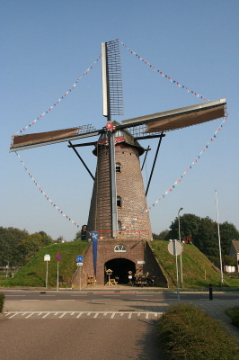
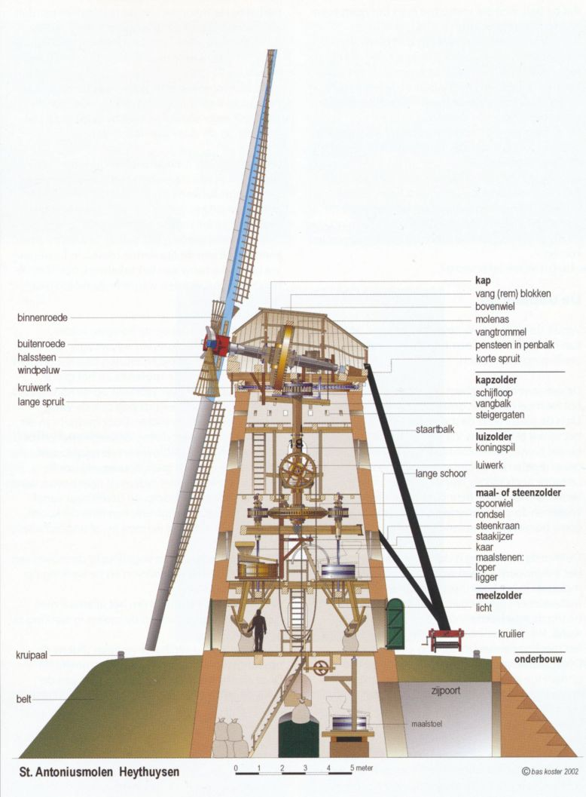
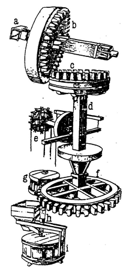

|
De Sint-Antonius molen staat in Heythuysen tegenover de bibliotheek.
Ze is gebouwd op een verhoging, de belt, en is dus
een De molen is gebouwd in 1861 en gerenoveerd in 1973 en 2004. Klik voor meer gegevens. De figuur onder de foto toont een doorsnede van de molen. (Klik erop voor een grote afbeelding.) Er zijn vier zolders. Je kunt erop komen via trappen en ladders.
De
De wind blaast tegen de wieken waardoor die gaan draaien.
Via een tandwiel op de
Het draaien van de wieken kan worden gestopt met een rem,
de |

  |